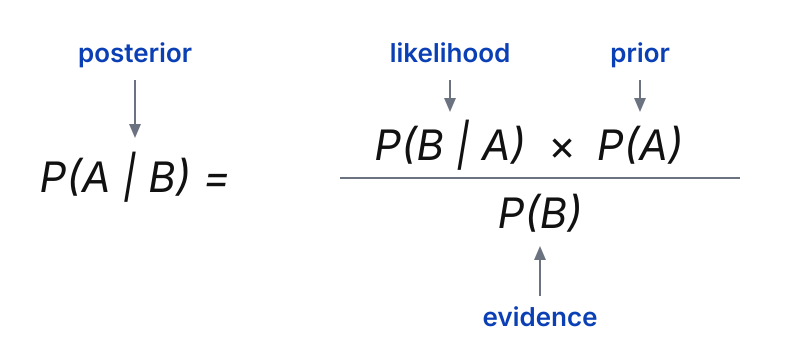
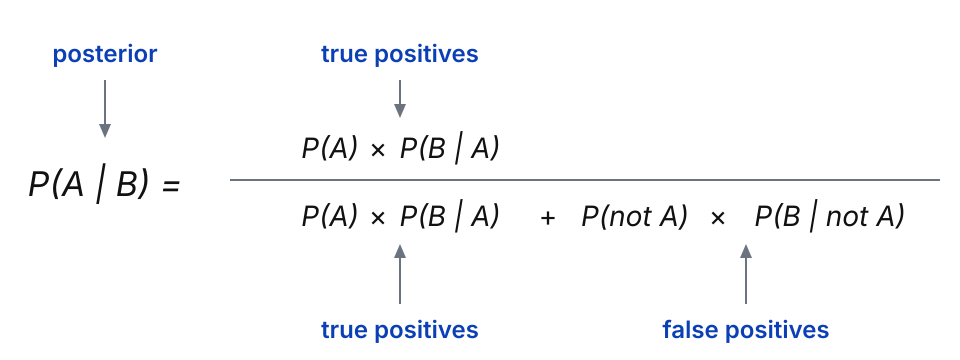
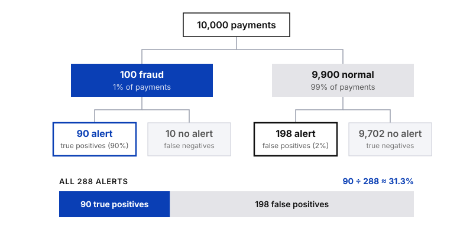

Probability
Bayes’ Theorem

In Conditional Probability & Independence we asked how likely B is once A has happened. In practice the question often points the other way: you know how a test or a filter behaves, but you want to know what a result actually means. Bayes’ theorem lets you turn one conditional probability into the other, and it is the idea behind everything from medical tests to spam filters.
Prior and posterior probability
In Bayesian statistics, the prior probability is the probability of an event before new data is collected. The posterior probability is the updated probability of the event after the new data is taken into account. Bayes’ theorem is the rule for getting from one to the other.
Say a medical condition is related to age. The prior is the probability that a person has the condition. The posterior is the probability that a person has it, given that they belong to a certain age group.
The theorem
For any two events A and B, the probability of A given B equals the probability of B given A, multiplied by the probability of A, divided by the probability of B:

Each part of the formula has a name:
- P(A) is the prior. What you believed before the new data.
- P(B | A) is the likelihood. How probable the data is if A is true.
- P(B) is the evidence. How probable the data is overall.
- P(A | B) is the posterior. The updated probability you want to calculate.
In words:
Posterior = Likelihood × Prior ÷ Evidence
One way to read it: you start with a prior belief, P(A), and use new data, the likelihood and the evidence, to turn it into a posterior, P(A | B). It also helps to see that the theorem links two conditional probabilities, "B given A" and "A given B". If you know one of them, Bayes’ theorem helps you find the other.
The expanded formula
Sometimes you do not know P(B), the evidence, so the basic formula cannot be used directly. The expanded version works it out from probabilities you usually do have. The evidence is the sum of all the ways B can happen: together with A, and together with "not A".
The easiest way to read the expanded formula is as a question: out of everyone who gets this result, how many are the real thing?
P(A | B) = true positives ÷ (true positives + false positives)
Each of the two groups is a simple "how common × how often" product:
- True positives = P(A) × P(B | A). How common A is, times how often the test catches it.
- False positives = P(not A) × P(B | not A). How common "not A" is, times how often the test raises a false alarm.
Written with symbols, that is the expanded formula:

Why alert accuracy is tricky
No test or model is perfect, and it can be wrong in two ways:
False positive
Alert, but nothing is wrong
The model raises an alert when there is no problem.
Example: a normal payment gets blocked
False negative
No alert, but something is wrong
The model stays quiet when there is a problem.
Example: a real fraud goes through
Fraud filters, spam filters and medical tests all make both mistakes. The expanded theorem takes both kinds of error into account.
Example: fraud alerts on card payments
Suppose an online shop uses a model that flags suspicious card payments. From past data we know:
- Prevalence. 1% of payments are fraud, so P(fraud) = 0.01.
- Detection rate (true positives). The model raises an alert for 90% of fraudulent payments, so P(alert | fraud) = 0.90.
- False alarm rate (false positives). The model also raises an alert for 2% of normal payments, so P(alert | not fraud) = 0.02.
The question: when a payment triggers an alert, how likely is it that it really is fraud? We want P(fraud | alert), so A is "is fraud" and B is "triggers an alert". Put the numbers into the expanded formula:
P(fraud | alert) = (0.01 × 0.90) ÷ [ (0.01 × 0.90) + (0.99 × 0.02) ]
= 0.009 ÷ (0.009 + 0.0198) = 0.009 ÷ 0.0288 ≈ 0.313
So the probability that a flagged payment is really fraud is only about 31.3%.
That looks surprising for a model that catches 90% of fraud. The reason is how rare fraud is. Picture 10,000 payments: 100 are fraud and the model flags 90 of them. The other 9,900 are normal, but 2% of them, 198 payments, get flagged anyway. Out of 288 alerts, only 90 are real fraud.

Why the prior matters
An alert moves the probability of fraud from 1% to 31.3%. That is a big update, but it is not the near-certainty many people expect from a model that catches 90% of fraud. If fraud were more common, the same model would be far more convincing. The posterior always depends on both the evidence and where you started.
How to explain it to stakeholders
“Our model catches 9 out of 10 fraud cases. But fraud is rare, only about 1 in 100 payments, so even a good model produces many false alarms.
To make that concrete: out of 10,000 payments, we expect about 288 alerts, and only 90 of them are real fraud. So roughly 1 in 3 alerts is real.
The question for us is therefore not ‘How accurate is the model?’ but ‘How much review time are we willing to spend to catch each fraud case?’”
One more honest point to share: the 1%, 90% and 2% come from historical data and can change over time. If the share of fraud changes, the answer changes too, so the calculation should be refreshed with current numbers.
Summary of the formulas
| Version | Formula |
|---|---|
| Bayes’ theorem | P(A | B) = P(B | A) × P(A) ÷ P(B) |
| In words | Posterior = Likelihood × Prior ÷ Evidence |
| Expanded, in words | P(A | B) = true positives ÷ (true positives + false positives) |
| Expanded, with symbols (P(B) unknown) | P(A | B) = P(A) × P(B | A) ÷ [ P(A) × P(B | A) + P(not A) × P(B | not A) ] |
Key takeaway
Bayes’ theorem updates a prior belief into a posterior using new evidence, and its expanded form works even when P(B) is not known, while accounting for false positives and false negatives. Always ask how rare the event is before trusting an alert, and when you present the result, lead with the answer in plain language and use counts. It is the foundation of Bayesian statistics, which data professionals use in fields from artificial intelligence to fraud detection and medical testing.